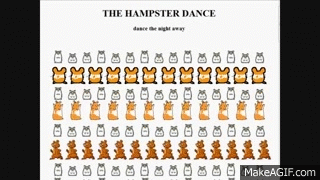

Hampster Dance
About
The Hampster Dance is considered one of the first viral internet memes, created in 1997. It shows rows of animated hamsters dancing to a sped-up song and represents the playful absurdity of the early web.
Popularity lifespan: